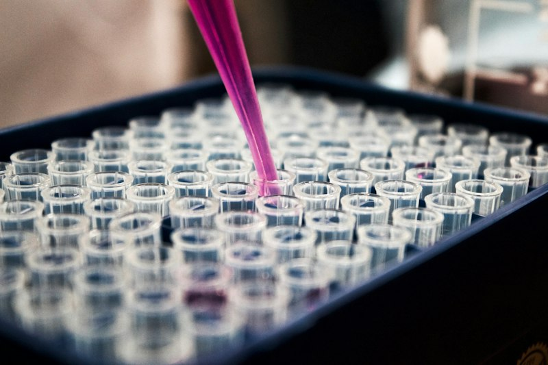
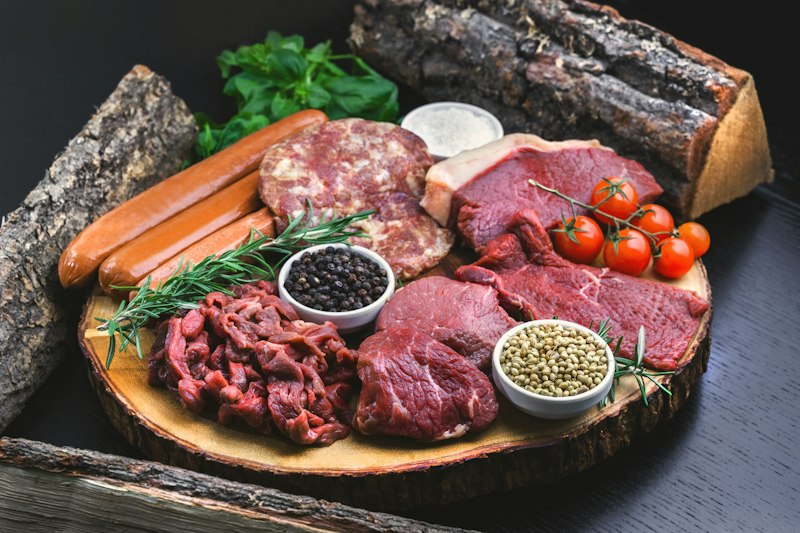
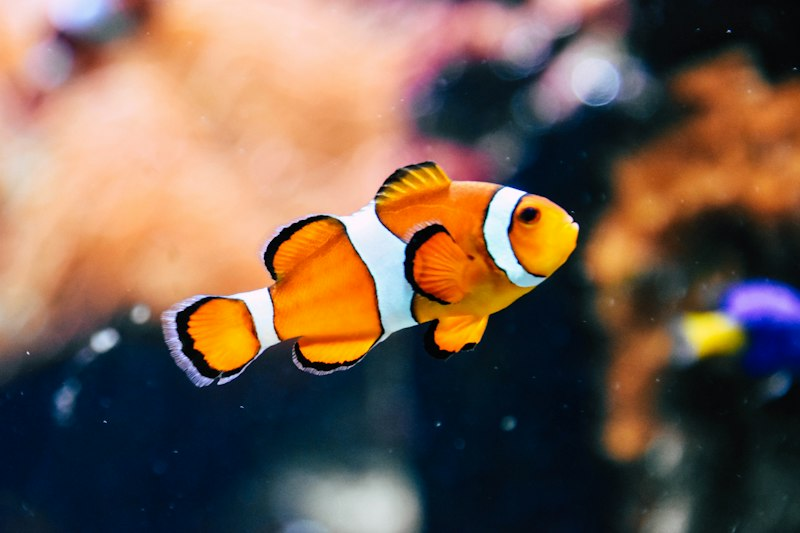
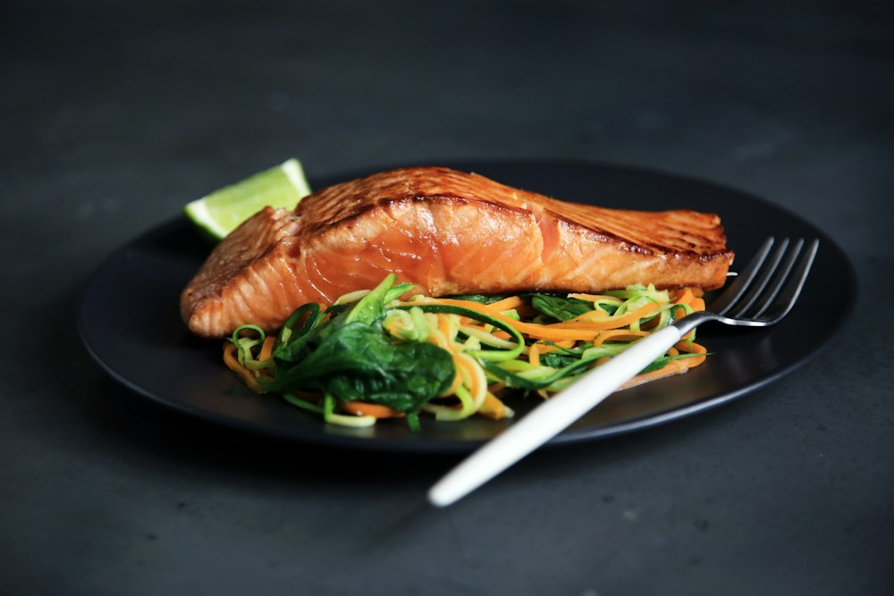
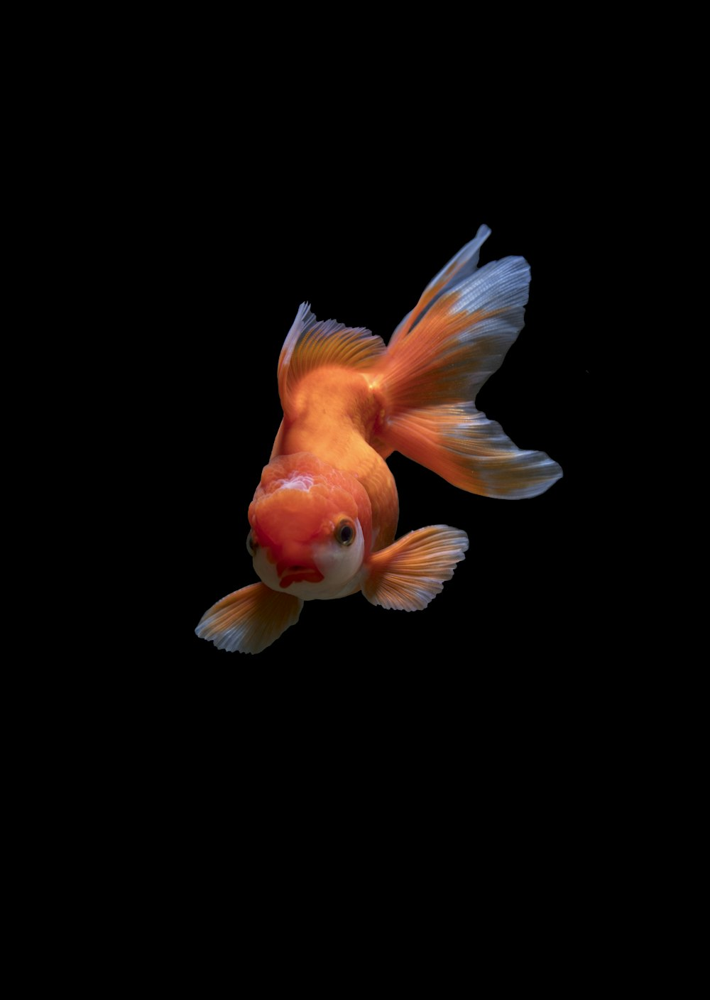

Essential
Essential
Farm Essentials
Submersible axial pumps, high-efficiency paddlewheels, knotless harvest nets, and everyday pond supplies.
Discover essentials ↗Everything your aquaculture operation needs to grow with confidence — from balanced commercial feeds and industrial paddlewheel aeration to precision digital water testing.
From the first fingerling stocked in the pond to the final harvest haul, the right supplies and water guidance make all the difference. AquaHarvest unites field-proven aeration equipment, nutrient-rich feeds, and rapid water test diagnostics in one dependable place.
Get to know the AquaHarvest difference → Essential
Essential
Submersible axial pumps, high-efficiency paddlewheels, knotless harvest nets, and everyday pond supplies.
Discover essentials ↗
PrecisionDigital optical DO meters, pH/ammonia photometers, and biofloc microbial conditioning treatments.
Explore water care ↗
NutritionScientifically formulated floating pellets and gut-health probiotics designed for consistent weight gain.
View feed solutions ↗Each aquatic species demands precise protein ratios, water oxygenation levels, and tank dynamics. We deliver proven nutrition and equipment tailored to your stock.

High-efficiency floating feeds formulated for robust gut immunity, rapid biomass accumulation, and low FCR.

Sinking crumble diets, high-salinity paddlewheels, and mineral supplements preventing early molt mortality.

Gentle micro-particulate feeds, flow-through incubation trays, and fine aeration ensuring 98%+ fry survival.

High-energy extruded pellets with astaxanthin and omega-3 oils for pristine raceways and indoor RAS tanks.
Commercial farm profitability and thriving aquatic ecosystems can grow hand in hand with biological intelligence.
Why Choose AquaHarvest ↗
Water chemistry changes quickly under hot midday sun and early dawn hours. Our digital testing instrumentation and microbial water conditioners protect your stock around the clock.
Practical expertise from seasoned farm engineers for everyday aquaculture challenges.
We analyze your pond dimensions, water source, stocking density, target species, and commercial goals.
We provide balanced feeds, correct motor horsepower aeration, and precision water testing tools.
Our team stays close with seasonal water audit guidelines, FCR tracking, and rapid delivery support.
Explore how aquaculture operators improved yields and reduced operating expenses with AquaHarvest supplies.

+28% BiomassAchieved a 1.18 FCR and 28% higher biomass weight through timed solar feeding and 4-impeller paddlewheels.
 99.1% Survival
99.1% Survival
Eliminated vibrio flare-ups and achieved 99.1% post-larvae survival using AquaHarvest probiotics and UV sterilization.

Zero DischargeOperated a complete 8-month murrel cycle with zero groundwater discharge using our microbial inoculum.
“Partnering with AquaHarvest transformed our ponds. Having dependable paddlewheels and laboratory-tested feed meant fewer sleepless nights and predictable harvests every single season.”Freshwater Commercial Farm Owner, Thanjavur (Tamil Nadu)
Everything you need to know about AquaHarvest commercial supplies, water testing, and dispatch timelines.
We supply commercial bagged feed starting from 500 kg (palletized) up to full 20-ton truckloads, with customized direct farm delivery across Tamil Nadu, Andhra Pradesh, and Kerala.
For urgent water parameter diagnostics or seasonal pond setup audits, our mobile laboratory van arrives within 24 to 48 hours of request confirmation.
Yes. All AquaHarvest 2HP and 4HP paddlewheel aerators carry a 1-year direct manufacturer warranty with guaranteed 48-hour dispatch on impellers, reducers, and nylon bearings.
Talk to our team about pond audits, bulk feeds, or custom equipment packages.